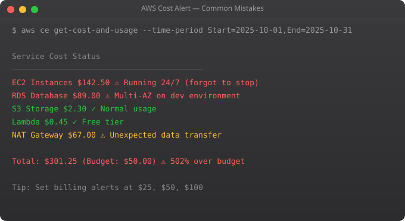

Cloud Cost Mistakes Beginners Make

One of the most shocking experiences for beginners working with cloud platforms is opening their billing dashboard and finding unexpected charges. What started as a learning project on the free tier suddenly results in a surprise bill. In more extreme cases — usually involving accidental exposure of credentials or forgetting running instances — the bills can be thousands of dollars. These experiences are common and preventable.
Mistake 1: Leaving Resources Running
The most common and costly mistake is simple: you spin up resources to experiment with something, forget about them, and they keep running. Unlike a computer you own that has already been paid for, cloud resources charge you continuously while they exist. An EC2 instance left running for a week can easily cost Rs 500-2000 depending on the instance type. A GPU instance left running for even a few hours can be very expensive. A NAT Gateway that you forgot about charges both hourly and per gigabyte of data transferred.
The solution requires both technical and behavioral changes. Technically: set up billing alerts immediately when you create a cloud account, use cloud cost monitoring tools like AWS Cost Explorer or GCP Billing Reports, and set up automated shutdown schedules for development resources. Behaviorally: make it a habit to review your running resources before ending any working session, and do a weekly audit of everything you have deployed.
Mistake 2: Not Understanding the Free Tier Limits
Cloud providers offer free tiers to let learners experiment without cost. But the free tiers have specific limits that are easy to accidentally exceed. AWS Free Tier offers 750 hours per month of EC2 t2.micro or t3.micro instances. That covers exactly one instance running 24/7 for a month. If you spin up two instances and both run all month, you have used 1,500 hours — 750 free, 750 charged. Data transfer charges are a particularly common surprise. Ingress (data coming in) is generally free. Egress (data leaving AWS) is charged at rates higher than most beginners expect. Building something that transfers a lot of data out of the cloud can create significant charges even if the compute is within free tier limits. Read the free tier limits carefully for every service you use. Set up billing alerts at low thresholds so you are notified immediately if something unexpected starts accruing charges.
Mistake 3: Oversized Instances
When choosing a server or database instance size, beginners often pick something larger than necessary to be safe. But in cloud environments, overprovisioning is genuinely wasteful — you pay for every hour of capacity whether you use it or not. A practical approach: start small and scale up if needed. Cloud platforms make it relatively easy to resize instances. An application that runs fine on a t3.small does not need to run on an m5.xlarge. Right-sizing is also something to review regularly for production systems. Cloud providers have tools like AWS Compute Optimizer that analyze your actual usage patterns and suggest more appropriately sized resources.
Mistake 4: Ignoring Data Transfer Costs
Data transfer is consistently one of the least understood and most surprising sources of cloud costs. The pricing structures are complex and vary by direction and destination. Moving data between AWS services in the same region is usually free or very cheap. Moving data between regions is more expensive. Moving data out to the internet is expensive and can add up quickly for applications that serve a lot of content. For applications that transfer a lot of data — video streaming, large file downloads, real-time data applications — content delivery networks like CloudFront (AWS), Cloud CDN (GCP), or Azure CDN are essential. CDNs cache content at edge locations close to users, which both improves performance and can significantly reduce origin data transfer costs.
Mistake 5: Not Using Spot/Preemptible Instances
Cloud providers offer significant discounts — often 60-90% off on-demand prices — for spare capacity that can be interrupted. AWS calls these Spot Instances, GCP calls them Preemptible VMs, and Azure has Spot Virtual Machines. These instances can be terminated by the cloud provider with short notice when they need the capacity. This makes them inappropriate for stateful applications that cannot handle interruption. But for many workloads — batch data processing, model training, CI/CD pipelines, development environments — they are perfectly suitable and dramatically cheaper. Learning to architect workloads to use spot instances where appropriate is one of the highest-value cloud cost optimization skills.
Mistake 6: Not Monitoring Costs in Real Time
Cloud bills are generated after the fact — you use resources, then you get billed. Without real-time monitoring, you can accumulate significant charges before you even notice. Every cloud account should have billing alerts configured from day one. Set a low threshold that will alert you before costs get serious. AWS Budgets, GCP Billing Budgets and Alerts, and Azure Cost Management all provide this functionality. Also review your detailed billing regularly. Many people look only at the total bill and do not dig into what actually generated those charges. The fundamental principle of cloud cost management is: treat cloud resources like water from a tap, not water from a bottle you already bought. You pay for what flows. Every resource you do not need should be turned off. Every resource you do need should be right-sized for actual usage.
Key takeaways
- The most common cloud cost mistake: leaving things running. Dev environments overnight, abandoned test instances, forgotten EBS volumes. AWS doesn't bill what you intend, only what's allocated.
- Right-sizing: most teams over-provision "just in case". Most workloads run fine on instance sizes 1-2 steps smaller than what people pick first.
- Data transfer costs hide where you don't look. Cross-AZ, cross-region, NAT Gateway egress — these add up silently. Audit them quarterly.
- Set up budgets and alarms before you start spending. "I'll watch the bill" is what people say right before they get a $5,000 surprise.
Building Cloud Intuition Over Time
Cloud computing is a domain where deep intuition — the ability to make good architectural decisions quickly, to diagnose problems efficiently, and to anticipate how systems will behave under load — develops through accumulated hands-on experience. Every project you build on cloud infrastructure teaches you something that cannot be learned from documentation alone. The cost surprises, the permission errors, the networking debugging sessions, the performance investigations — these are not obstacles to learning, they are the learning. The engineers who have built genuinely deep cloud intuition have usually accumulated it through many projects over several years, not from any single course or certification. Start building things, make mistakes safely in learning environments, and accumulate that experience deliberately.
Disclaimer:
This article is for educational and informational purposes only.
It does not provide financial, legal, or professional advice.
Cloud pricing varies by provider, region, and usage.
Always verify details from official documentation.
The Most Expensive Cloud Mistakes and How to Avoid Them
AWS and GCP are designed to be easy to start with -- and easy to accidentally spend more than intended. The billing model (pay for what you use) is powerful for production workloads but dangerous for beginners who leave resources running. Here are the mistakes that have cost people thousands of dollars, and how to prevent them.
Mistake 1: Forgotten running instances
Cost: t3.medium at Rs. 2,500/month if running 24/7
Prevention:
- Set billing alert at Rs. 500
- Use instance scheduler to stop at night
- Audit monthly: aws ec2 describe-instances --output table
Mistake 2: Elastic IPs not released
Cost: ~Rs. 250/month per unused Elastic IP
Prevention: aws ec2 describe-addresses | grep unassociated
Mistake 3: Oversized RDS instances
Cost: db.m5.xlarge costs 4x more than db.t3.small
Prevention: Start small, monitor, resize based on actual usage
Mistake 4: Data transfer costs ignored
Cost: Outbound data: ~Rs. 7/GB
Prevention: Use CloudFront CDN, architect to keep data in region
Mistake 5: NAT Gateway over-use
Cost: ~Rs. 3,200/month + Rs. 7.50/GB processed
Prevention: Use VPC Endpoints for AWS services, review architecture
Mistake 6: Unused EBS volumes
Cost: gp3: Rs. 6.5/GB/month -- orphaned 100GB volume = Rs. 650/month
Prevention: aws ec2 describe-volumes --filters Name=status,Values=availableSetting Up Cost Monitoring from Day One
The single most important cost control action: set up billing alerts before you deploy anything. In AWS: Billing > Budgets > Create Budget. Set monthly budget at your comfortable limit. Alert at 80% (warning) and 100% (stop or investigate). This takes 5 minutes and prevents every "I had no idea it was costing that much" story.
Enable Cost Anomaly Detection (AWS Cost Explorer > Anomaly Detection). This uses machine learning to detect spending that is unusually high compared to your baseline and alerts you immediately. Combined with billing alerts, this provides comprehensive protection against accidental cost spikes.
More Questions Answered
How do I see a breakdown of what I am being charged for on AWS?
AWS Cost Explorer (Billing > Cost Explorer) shows cost by service, region, and resource. Enable "Cost allocation tags" and tag all resources with project and environment -- then filter Cost Explorer by tag. For a granular view: Billing > Bills shows line-item charges. For ongoing monitoring: Cost Explorer > Monthly costs by service.
What is AWS Free Tier and how do I stay within it?
AWS Free Tier gives 750 hours/month of t2.micro or t3.micro EC2, 5GB S3 storage, 750 hours RDS db.t2.micro, and more for 12 months. Check your Free Tier usage in Billing > Free Tier. The most common mistake: running more than one instance (750 hours = ~1 month for ONE instance, or 2 weeks for TWO). Always monitor.
Is GCP or Azure cheaper than AWS?
Pricing varies by service and region. GCP is often cheaper for compute and has a more generous always-free tier. Azure is competitive for Microsoft-heavy workloads. AWS has the widest service selection. For learning, all three have free tiers. For production, do a specific comparison for your actual workload using each provider's pricing calculator.
Frequently Asked Questions
Is this topic relevant for Indian tech professionals?
Yes. India is one of the fastest-growing tech markets globally. These skills are in high demand across startups, MNCs, and product companies in Bangalore, Hyderabad, Pune, and Mumbai.
How do I stay updated on this topic?
Follow official documentation, tech blogs from practitioners, GitHub repositories, and communities like Dev.to, Hashnode, and Reddit. Avoid news that creates urgency without substance.
What resources does SRJahir Tech recommend?
Official documentation first. Then practical tutorials. Then build real projects. SRJahir Tech articles are written from real production experience — bookmark the series that matches your learning goal.
How long does it take to see results after learning?
Consistent daily practice for 3-6 months produces real, usable skills. The key is building projects, not just reading. Every article on SRJahir Tech includes practical examples you can implement today.
Is SRJahir Tech content free?
Yes. All articles on SRJahir Tech are completely free. No paywalls, no subscriptions. Quality technical education should be accessible to everyone, especially aspiring engineers in India.